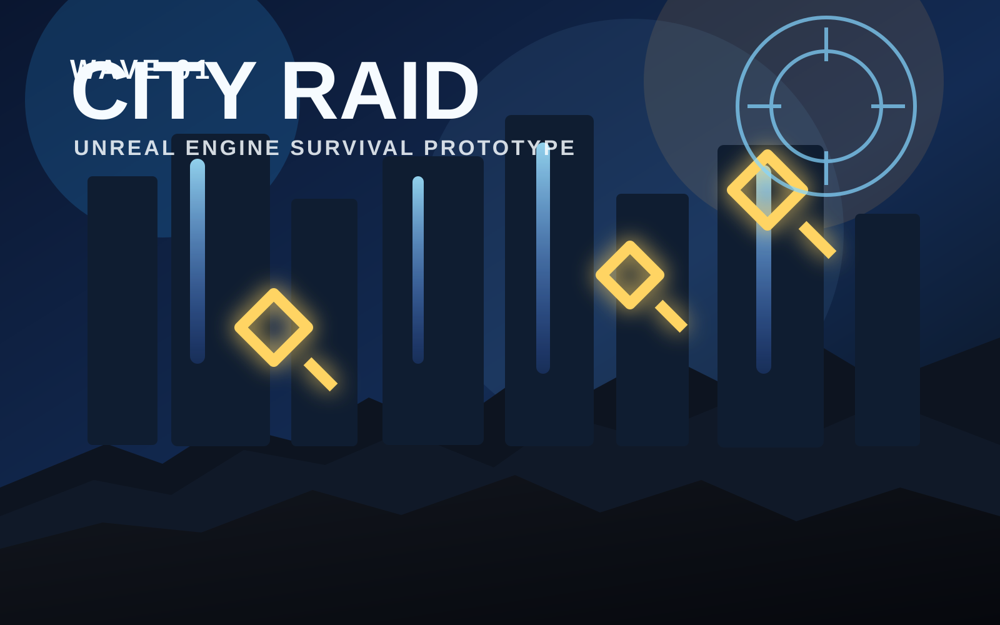
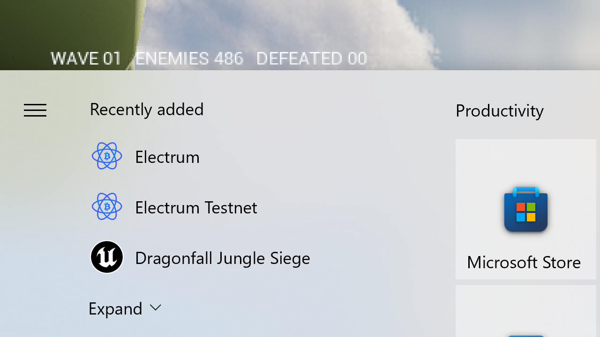
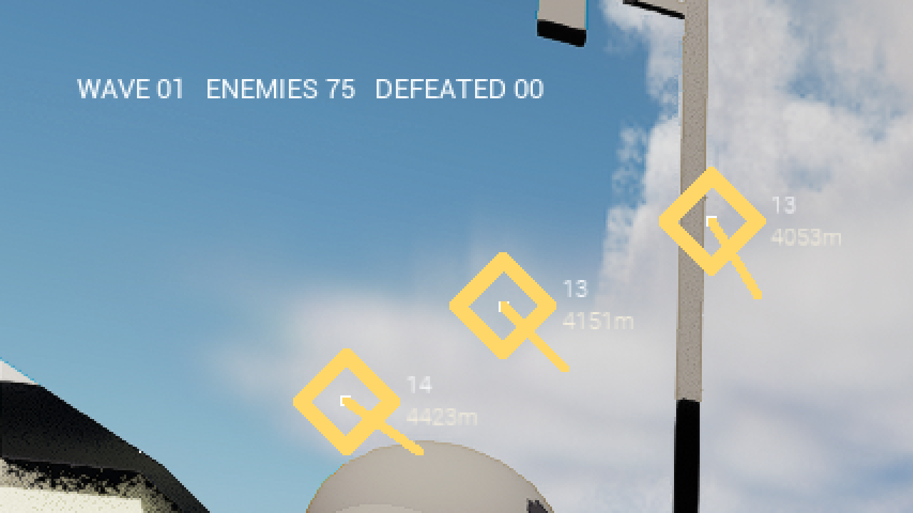
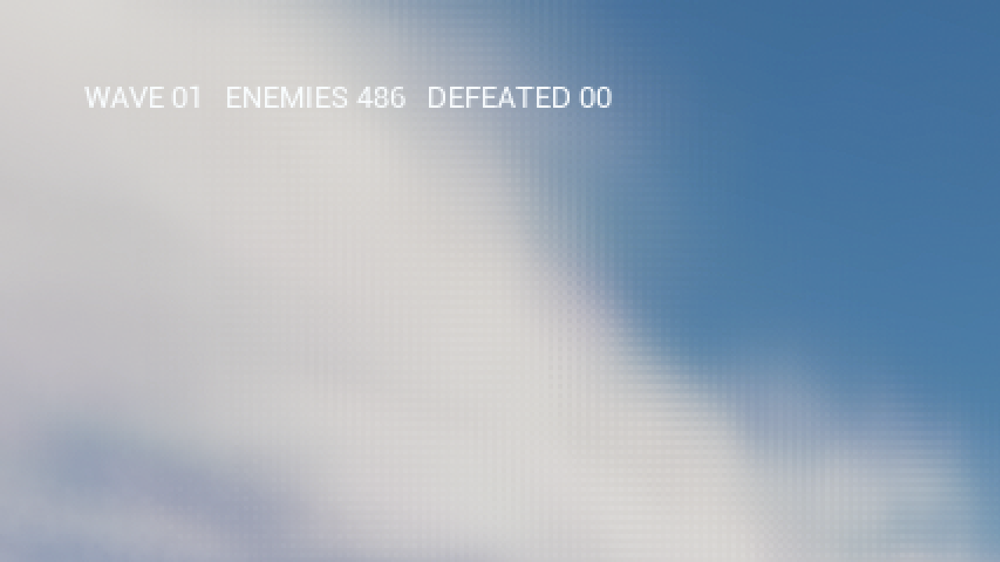

Fresh downloadable build
City Raid
Swing, climb, float, and hunt across an overrun city as a spider protagonist while waves of bugs, flies, birds, and mites flood the blocks. This downloadable Unreal build is the current live Windows package from the latest CityRaidTPS project.

Why it is fun right now
A faster, stranger Unreal action prototype
Spider movement
Web-swing off buildings, cling to walls, and hold a missed web shot to drift into floaty flight instead of just dropping out of the air.
Swarm pressure
Large neighborhood waves mix multiple enemy types so the city feels overrun instead of empty or scripted.
Predator loop
Wrap enemies in web, cocoon them, feed to recover health, and build up the venom-bomb ultimate while you stay mobile.
New pause menu
The latest build adds a real in-game Escape menu with Resume, Restart District, and Quit Game so the downloadable version feels less prototype-rough.
Current captures
Live screenshots from the packaged build



Download notes
How to play locally
Inside the zip
The packaged build is served here as five split download parts plus a tiny Windows download assistant that rebuilds the full zip for you.
What to expect
This build is focused on the downloadable single-player game. It does not ship the older website room-code board that an earlier placeholder page described.
Current highlight
The latest refresh specifically includes the new in-game Escape pause/options flow on top of the spider traversal and swarm systems.
- Download
City-Raid-Download-Assistant.cmd. - Run it and let it pull the five hosted package parts into one zip.
- Let it extract the archive fully before launching the game.
- Run
FIRSTPERSON.exefrom the extracted folder.
Reconstructed zip size: about 402 MB. Extracted size is a little over 1 GB.
Packaged from the latest CityRaidTPS Unreal project on April 12, 2026.
The split download layout keeps the game publishable on GitHub Pages while still serving the full Windows package.
SHA-256: 0F2B6CD1767F0D3A1E23557486A05D1AAF05BD059E0E9FFA738CA2653740B309